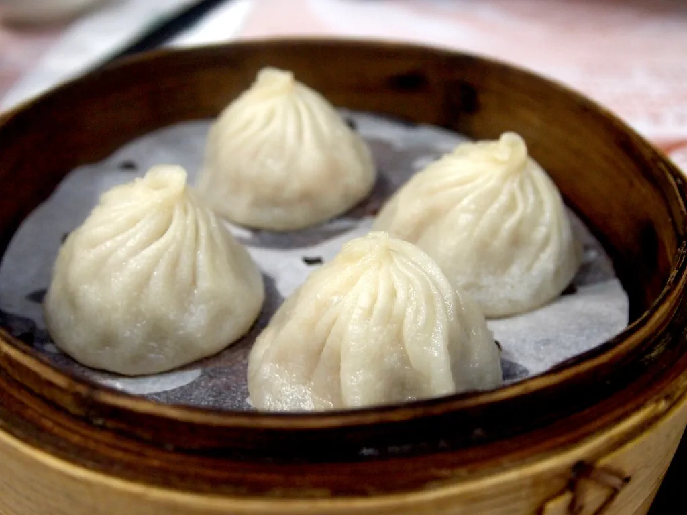

Chili Chicken Momo
Steamed momos tossed in a bold, glossy chili sauce. The one everyone talks about.

Hand-folded momos, made fresh on McNeil Drive
“Better than anything I’ve had in California. I came back two days in a row.”
Momos are South Asian dumplings, Nepali and Tibetan in origin, steamed or pan-fried and stuffed with spiced meat or vegetables.
Chili momo gets tossed in a bold sauce, jhol momo arrives in a tangy soup, and butter momo comes rich and creamy. Comfort food with serious flavor depth.
Never in my life have I tasted something so delicious. I got the butter masala dumplings. If you love dumplings. Run. Don’t walk!
I was visiting Austin from the San Francisco Bay Area and found this amazing food truck. Was blown away by the flavors, better than anything I’ve had in California. Had to come back to back for 2 days just to sample all the momo varieties.
What kinda dumpling mood are you in? The butter momos are to die for. What an innovative Indo-Nepali fusion.
Monks Momo is a food truck in North Austin where the momos are made fresh and the owner is the kind of person who packs in extra halwa when your order runs a little late.
Chili momo, jhol momo, butter masala. Each one a different mood, served under the string lights with the game on the screen.
Call ahead so the box is hot when you arrive, or just pull into the court and follow the smell of fresh momos.